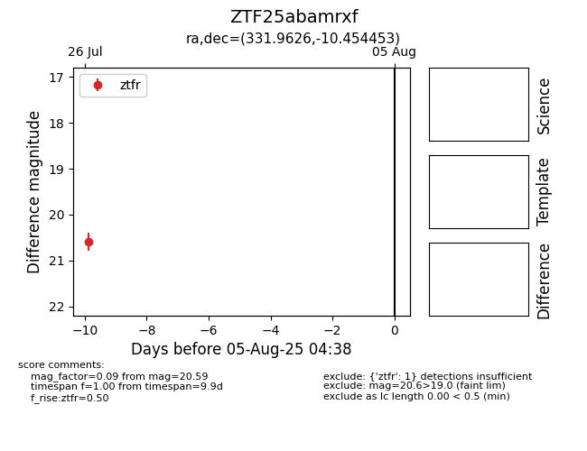

Target ZTF25abamrxf at 2025-08-05 04:38, see:
FINK: fink-portal.org/ZTF25abamrxf
Lasair: lasair-ztf.lsst.ac.uk/objects/ZTF25abamrxf
ALeRCE: alerce.online/object/ZTF25abamrxf
alt names
ZTF25abamrxf (ztf,fink)
coordinates:
equatorial (ra, dec) = (331.9626,-10.45445)
galactic (l, b) = (48.3418,-48.09940)
photometry
last ztfr=20.59
1 ztfr detections
